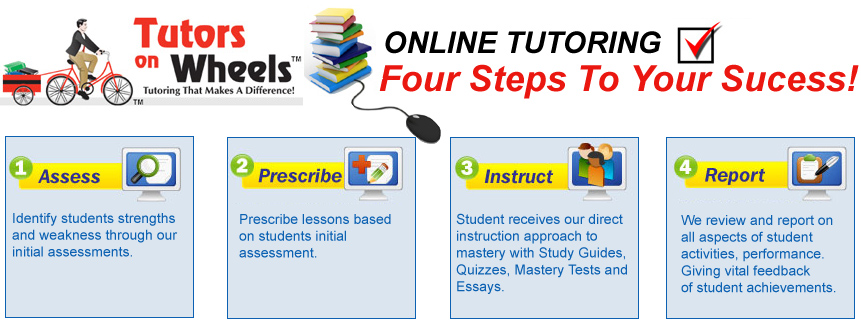

TOW Online Tutoring

Our system is built around a four-step process; assessment against state and other standards, prescription of lessons to address skills identified in the assessment, instruction using lessons and other materials, and, throughout the process, in-depth reporting.
All lessons share a standardized approach to online learning. This standardized approach minimizes student requirements to learn site navigation techniques and maximizes student learning time. Our approach consists of:
- Study - all study activities have limited text per page and are generally restricted to presenting single concepts. These concepts are supported by age-appropriate graphics, interactive activities and third-party resources, aligned to lesson material, links such as Encyclopedia Britannica® to expand the learning experience.
- Take a practice test - practice tests provide an opportunity to review material learned and/or to return to the study guide to reengage lesson materials. Practice test scores are not used to determine lesson mastery.
- Take a mastery test - mastery tests don't allow reengagement with lesson materials and are used to determine mastery of the lesson, at mastery levels determined by administrators and teachers.
- Respond to an essay assignment - essays in most lessons provide an additional opportunity for the student to demonstrate, and for the teacher to evaluate, subject area mastery and are saved into the student’s personal portfolio for teacher review and grading.
Using this approach we are able to provide greater learnign capability for your child while maximizing the time it takes to learn materials.
Contact us today for more information.
TOLL FREE: 1-877-TUTOR NY / (718) 268-0092
About Us
Greetings! Welcome to Tutors on Wheels online tutoring program! This exciting new method of instruction is a development of our parent company, Tutors on Wheels. Tutors on Wheels, founded in 2004, has had remarkable results in just five years. We have attained our goal of providing excellent educational support for all kinds of students, from those with special needs and learning disabilities to those who just want to gain an extra measure of confidence.
With our personal interest in the students we serve, we have enjoyed true success and are proud of our track record. We have seen students get better grades on standardized tests, return to school to get a GED and go on to college, or overcome stumbling blocks in their studies.
We are now expanding our services with Tutors on Wheels' online tutoring. This method will give students more flexibility in their schedules while maintaining the same personal connection Tutors on Wheels is known for. We are certain that with Tutors on Wheels online tutoring program, we can all expect great results.
Our Promise
We are here to assist students of all ages in achieving success with schoolwork, homework, and any other learning challenges. Tutors on Wheels' online tutoring is dedicated to bringing you the same quality and consistency of instruction we have always offered but with the addition of modern technology. We can now reach out to you wherever you are with a committed staff of educators who work within a wide spectrum of study areas to help you acquire the highest possible level of skills.
We are pleased to be in the vanguard of modern education by offering this flexible, state of the art instructional method for students who need an extra boost with schoolwork or exams.
What is online tutoring and how does it work?
With online tutoring, you can utilize today’s technology to bolster your progress or troubleshoot specific subject areas and problems. Anyone who has Internet access can use this convenient, up-to-the minute method to enhance and enrich their studies. Online tutoring makes use of whiteboard technology, a method with which you can have an online dialog with a tutor by simply typing your problem or question. You may also use VOIP (voice over Internet protocol) to literally speak with the tutor via the computer.
A pool of qualified tutors is available 24/7; tutors are equipped to help with homework, clear up trouble spots as you prepare for an exam, or assist you in brushing up in a particular subject area.
Why is online tutoring beneficial?
Like one-on-one tutoring, the online method allows the student to move at his/her own pace. The tutor can target the problem and address it in a coherent, understandable way but, online tutoring has some added benefits. It is not as costly as in-person instruction; there is no travel time involved, and no “open” and “closed” hours because there is always a tutor available. Students can get instructional support, sharpen their skills, or do research at any time and from any location. Students will keep current with the latest technology while they receive the undivided attention of a tutor on a schedule that is convenient for them.
Tutors on Wheels online tutoring serves everyone.
No matter who you are, you can benefit from Tutors on Wheels. General Ed students, home Schooled students, special Ed students, graduate students, people with learning disabilities (such as ADD, Dyslexia, etc.), and students who are committed to getting a GED can all move forward with their education as a result of online tutoring. Tutors on Wheels online tutoring reaches studentsin underserved areas and meets all local, regional and state requirements and standards.